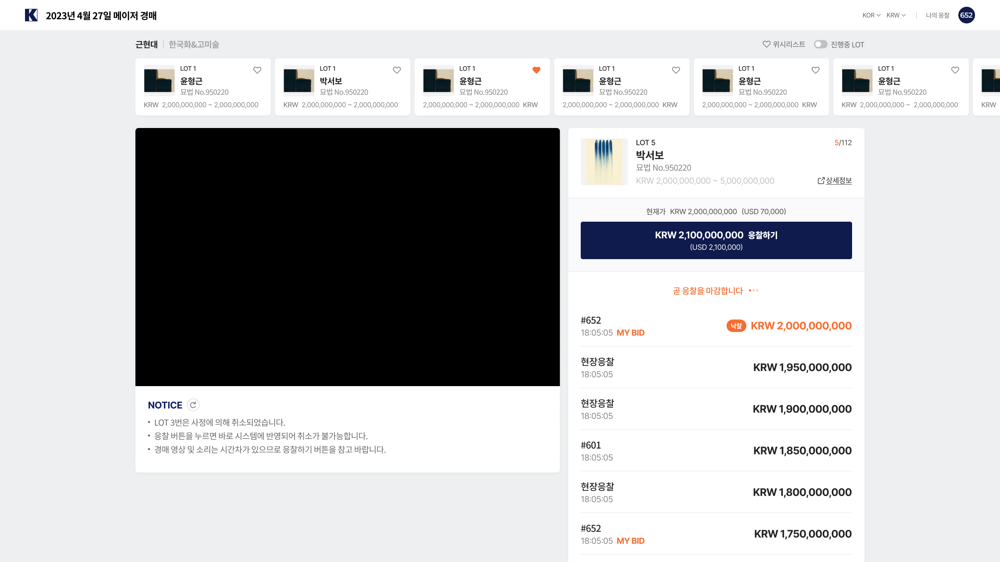

React
라이브 경매 리뉴얼
- React
- TypeScript
라이브 경매는 온라인에서 편리하게 경매에 참여하기 위한 웹 서비스입니다. 기존 데스크탑용으로만 이용가능하던 서비스로 장소에 구애받지 않고 어떤 디바이스로도 참여할 수 있게 하기 리뉴얼을 기획하게 되었습니다.
UI/UX를 논의하기 위해 Figma를 활용했으며, React와 TypeScript를 이용하여 UI 개발을 진행했습니다. 개발 소통 도구로는 Git과 Azure클라우드 플랫폼을 이용하였습니다
- 
구축부터 유지보수까지 지속적으로 참여한 프로젝트입니다. 기획, 디자인, 개발에 이르기까지 실무자들과 일일 스크럼 회의를 통해 애자일한 작업을 진행했습니다.
프레임워크 기반의 UI 개발 경험을 통해 컴포넌트의 재사용성을 고민하고 높일 수 있었습니다. 구축을 함께 작업했던 팀원이 있어 서로 의견을 교환하며 즐겁게 협업했던 기억이 있습니다. 마크업 개발을 통한 빠른 프로토타입 공유가 가능했던 덕분에 UX를 재검토하고 향상시킬 수 있었습니다.
TypeScript를 사용하여 안전하고 편리하게 컴포넌트를 활용할 수 있도록 했습니다. 예외 케이스에서 UI가 어긋나는 문제를 막기 위해 정해진 prop만 받도록 제한했습니다. 또, 목 데이터를 사용하는 경우에는 미리 타입을 지정하여 API 연동 시의 혼동을 줄였습니다.
C# 닷넷으로 운영되던 웹 사이트에서 처음으로 리엑트언어를 사용한 서비스를 제공하는거였기에 기본 요소를 잘 활용할 수 있도록 컴포넌트를 정리했습니다. 유지보수 작업 또한 놓칠 수 없는 부분이었기에 코드리뷰도 꼼꼼하게 받아 체계적으로 프로젝트 진행을 하였습니다.